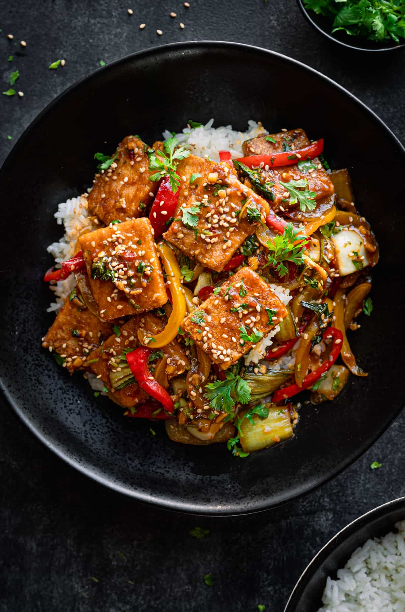

Tofu Stir Fry

This vibrant tofu stir-fry is a quick and delicious dish, perfect for a busy weeknight or a healthy meal option. Packed with colorful vegetables like bell peppers, broccoli, and carrots, it features crispy, golden-brown tofu cubes tossed in a savory stir-fry sauce made with soy sauce, garlic, and a hint of sweetness. It’s light yet satisfying, and can be served over rice or noodles for a complete meal. Whether you're a tofu enthusiast or trying it for the first time, this stir-fry is sure to become a favorite!
Ingredients
- Rice
- Tofu
- Onions
- Bell Peppers
- Sesame seeds
- Broccoli
- Carrots
- Garlic
- Ginger
- Soy Sauce
Steps
- Prepare the tofu: Press the tofu to remove excess water, then cut it into cubes.
- Cook the tofu: Heat 1 tablespoon of vegetable oil in a pan over medium heat. Add the tofu cubes and cook until golden and crispy on all sides (about 8-10 minutes). Remove tofu from the pan and set aside.
- Sauté the vegetables: In the same pan, add a bit more oil if needed. Stir-fry the bell peppers, broccoli, and carrots for about 5 minutes until they are tender-crisp.
- Make the sauce: In a small bowl, mix 2-3 tablespoons soy sauce, 1 tablespoon sesame oil, 1 tablespoon rice vinegar, and 1 tablespoon honey or maple syrup (if using). Add the garlic (and ginger, if using).
- Combine and serve: Add the cooked tofu back into the pan with the vegetables. Pour the sauce over and stir everything together. Cook for another 2 minutes. Serve over rice or noodles and enjoy!